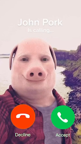

| Kontentek |
|---|
| 1. Kinézete |
| 2. Származása |
| 3. Használata |
| 4. Trivia |
Egy átlagos ember, aki félig malac.
John Pork egy élő virtuális influenszer, aki Instagramra rak ki posztokat utazásairól, időtöltéseiről, és egyebekről. Eredetileg Olaszországból származik, 2018. Június 15-én jelent meg először az interneten, de később elutazott Londonba, ahol folytatta karrierjét.
John Pork mémet nagyrészt arra használják, hogy elindul egy adott videó, ami egy random időnél félbe van szakítva azzal, hogy telefonon hív John Pork.

"pig but also a dude"